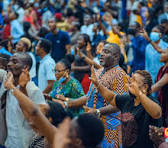
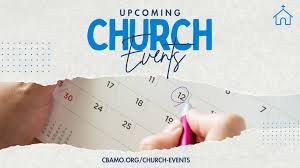

Worship
Heartfelt, Bible-centred worship for all ages.
Learn more →A place of worship, prayer and community. Join us to encounter God and serve our neighbours.


Heartfelt, Bible-centred worship for all ages.
Learn more →Children, Youth, Women, Men, Outreach and more.
See ministries →
Conferences, outreach events and special services.
Upcoming events →Watch or listen to the most recent message that encourages faith and service.